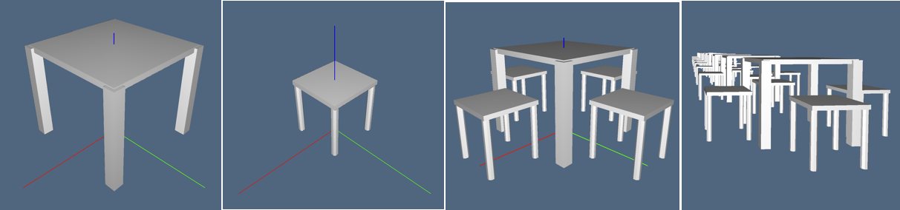

Assemblies of cellular complexes
Hierarchical models of complex assemblies are generated by aggregation of cellular complexes, each one defined in a local coordinate system, and possibly relocated by affine transformations of coordinates. This operation may be repeated hierarchically, with subassemblies defined by aggregation of simpler parts, and so on, until to obtain a set of LAR models, which are not further decomposed.

Figure 1: Hierarchical assembly of cellular 3-complexes.
Two main advantages can be found in a hierarchical modeling approach. Each component complex and each assembly, at every hierarchical level, are defined independently from each other, using a local coordinate frame, suitably chosen to make its definition easier. Furthermore, only one copy of each component is stored in memory, and may be instanced in different locations and orientations how many times it is needed.

Figure 2: Hierarchical assembly of a 2-complex consisting of a single 2-cell (the square): (a) 2-skeleton; (b) 1-skeleton of the resulting complex.
Hierarchical graphs
A hierarchical model, defined inductively as an assembly of component parts, is described by an acyclic directed multigraph, often called a scene graph or hierarchical structure in computer graphics and modeling. The main algorithm with hierarchical assemblies is the traversal function, which transforms every component from local coordinates to global coordinates, called world coordinates.
Acyclic directed-multigraph
The standard definition of a directed graph $G$ states that it is a pair $(N,A)$, where $N$ is a set of nodes and $A$ is a set of directed arcs, given as ordered pairs of nodes. Such a definition is not sufficient when more than one arc must be considered between the same pair of nodes.
In this case the notion of multigraph is introduced. A directed multigraph is a triplet $G := (N,A,f)$ where $N$ and $A$ are sets of nodes and arcs, respectively, and $f: A \to \mathbf{N}^{2}$ is a mapping from arcs to node pairs. In other words, in a multigraph, the same pair of nodes can be connected by multiple arcs.
Directed graphs or multigraphs are said to be acyclic when they do not contain cycles, i.e. when no path starts and ends at the same vertex. Trees are common examples of acyclic graphs. A tree, where each non-leaf node is the root of a subtree, is the best model of the concept of hierarchy. Nodes in a tree can be associated with their integer distance from the root, defined by the number of edges on the unique path from the root to the node. A tree can be layered by levels, by putting in the same subset (level) all the nodes with equal distance from the root.
Acyclic graphs/multigraphs are also called hierarchical graphs, because they can be associated to a tree, generated at run-time by visiting the graph with some standard traversal algorithm, e.g. with a depth-first-search. The ordered sequence of nodes produced by the traversal is sometimes called a linearized graph. Each node in this sequence is suitably transformed from local coordinates to world coordinates, i.e. to the coordinates of the root, by the traversal algorithm.
Hierarchical structures
Various kinds of hierarchical assemblies are used in standard graphical systems, such as GKS, PHIGS and VRML, as well as in graphics libraries like Open Inventor and Java 3D. The type of hierarchical structures adopted here is inspired, even in the name of the function used for this purpose, by the one introduced by PHIGS, i.e. Struct.
The arcs of scene graphs are normally specified implicitly in real graphical systems. For example, an arc is actually specified when a node is contained or referred within another one. In particular, it is possible to specify a new container node together with either the matrix or the parameters of the transformation to be associated with the the arc that connects the new container to the current node.
Examples
Containers of geometric objects
type Struct
body::Array
box
name::AbstractString
dim
category::AbstractString
endwhere body::Array is the actual container, which may contain geometric models, affine transformations, and other structure values; box is a representation of the containment box; name is an identifier, initialized to the id of the empty object created by the constructor Struct(); dim is the dimension of the embedding space, i.e. the number of coordinates; category is a property of the created value, initializated to "feature".
A typical LAR geometrical model is a Tuple (triple or pair), where the first element is the matrix of coordinates of vertices, and the remaining arrays of array of integers provide the vertex indices of each cell.
julia> square = ([[0; 0] [0; 1] [1; 0] [1; 1]], [[1, 2, 3,
4]], [[1,2], [1,3], [2,4], [3,4]])
# output
([0 0 1 1; 0 1 0 1], Array{Int64,1}[[1, 2, 3, 4]], Array{Int64,1}[[1, 2], [1,
3], [2, 4], [3, 4]]) A container of geometrical objects is defined by applying the function Struct to the array of contained objects. The value returned from the application is a value of Struct type. The coordinate system of this value is the one associated with the first object of the Struct parameters. Also, the resulting geometrical value is often associated with a variable name.
Affine transformations and containers
Affine transformations or tensor matrices, of type Arra{Float64, 2}, are created by functions
LinearAlgebraicRepresentation.t(args...) # for translation
LinearAlgebraicRepresentation.s(args...) # for scaling
LinearAlgebraicRepresentation.r(args...) # for rotationAn affine $3\times 3$ transformation matrix, generated in homogeneous normalized coordinates by the function call t(-0.5,-0.5), can be applied to a LAR object obj both explicitly by using the function apply(Matrix, obj) or implicitly by creating a Struct hierarchical object, as shown by the following examples:
julia> table = LinearAlgebraicRepresentation.apply( LinearAlgebraicRepresentation.t(-0.5,-0.5), square )
# output
([-0.5 -0.5 0.5 0.5; -0.5 0.5 -0.5 0.5], Array{Int64,1}[[1, 2, 3, 4]],
Array{Int64,1}[[1, 2], [1, 3], [2, 4], [3, 4]])
julia> table = LinearAlgebraicRepresentation.Struct([ LinearAlgebraicRepresentation.t(-0.5,-0.5), square ])
# output
Struct(Any[[1.0 0.0 -0.5; 0.0 1.0 -0.5; 0.0 0.0 1.0], ([0 0 1 1; 0 1 0 1],
Array{Int64,1}[[1, 2, 3, 4]], Array{Int64,1}[[1, 2], [1, 3], [2, 4], [3, 4]])],
Array[[-0.5; -0.5], [0.5; 0.5]], "10234090646332247690", 2, "feature") The generation of container nodes may continue hierarchically by suitably applying Struct. Notice that each LAR object in a Struct container is transformed by each matrix before it within the container, going from right to left. The action of a transformation (tensor) extends to each object on its right within its own container. Whereas, the action of a tensor does not extend outside its container, according to the semantics of PHIGS structures.
chair = LinearAlgebraicRepresentation.Struct([ LinearAlgebraicRepresentation.t(0.75,0), LinearAlgebraicRepresentation.s(0.35,0.35), table ])Container evaluation
The function evalStruct, when applied to a Struct value, generates an Array of LAR models, each one originally defined in a local coordinate system, transforming all of them in the same world coordinate, equal to the ones of the first object in the Struct parameter sequence.
Conversely, the struct2lar function generates a single LAR model (cellular complex), whose components are here assigned respectively to variables W (coordinates of vertices), FW faces (2-cells), and EW edges (1-cells). Notice that the whole model is embedded in 2D, since the W array (coordinates by columns) has two rows
scene = LinearAlgebraicRepresentation.evalStruct(struct02) # array of LAR models
W,FW,EW = LinearAlgebraicRepresentation.struct2lar(struct02) # single LAR modelSimple assembly examples
The object struct0 below contains a table and 4 chairs, struct01 is a row of 10 suitably translated instances of struct0, and struct02 is another assembly of suitably translated struct01 instances.
L = LinearAlgebraicRepresentation
struct0 = L.Struct([ L.t(2,1),table, repeat([L.r(pi/2), chair ], outer = 4)... ])
struct01 = L.struct2lar(L.Struct( repeat([ struct0, L.t(0,2.5) ], outer = 10) ));
scene = L.struct2lar(L.Struct( repeat([ struct01, L.t(3,0) ], outer = 10) ));To see the generated 2D scene you need the LARVIEW module.
using LARVIEW
LARVIEW.view(scene[1],scene[2])
LARVIEW.view(scene[1],scene[3])A different example provides a sphere, and a cylinder instance suitably translated, within the same Struct container. Of course, we could define a hierarchical assembly of any size and deep, containing any number of Struct nodes.
2D surfaces embedded in 3D are normally displayed in LARVIEW as made of unoriented 2-cells. In order to get a better dispaly, the user should press the t or T keys on the keyboard.
assembly = L.Struct([L.sphere()(), L.t(3,0,-1), L.cylinder()()])
using LARVIEW
LARVIEW.view(L.struct2lar(assembly))
Figure 3: (a) Enlargement of a portion of the exploded complex in Fig.1; (b) an assembly with two cuboidal 2-complexes (surfaces) embedded in 3D.
Coding of 3D refectory assembly
The refectory model shown in Figure 1 is stepwise developed here. Of course, in order to display the various geometric models, the LARVIEW package is needed.
using LinearAlgebraicRepresentation
L = LinearAlgebraicRepresentation
using LARVIEW
View = LARVIEW.view
Figure 4: The generation process of the
refectoryassembly shown in Figure 1.
First develop the table model, starting from a single cube object, of type LAR = Tuple{Points,Cells}, suitably translated to get the base center at the origin, then create containers for tableTop, tablelegs, and table. Finally check the assembly correctness, and convert to a LAR value. The View primitive may be applied both to Struct and LAR values, as well to other types.
cube = L.apply( L.t(-.5,-.5,0), L.cuboid([1,1,1]))
tableTop = L.Struct([ L.t(0,0,.85), L.s(1,1,.05), cube ])
tableLeg = L.Struct([ L.t(-.475,-.475,0), L.s(.1,.1,.89), cube ])
tablelegs = L.Struct( repeat([ tableLeg, L.r(0,0,pi/2) ],outer=4) )
table = L.Struct([ tableTop, tablelegs ])
View(table)
table = L.struct2lar(table)
View(table)Then build the chair model as above. The polyhedral cylndr is defined with 8 lateral faces, and 16 vertices.
cylndr = L.rod(.06, .5, 2*pi)([8,1])
chairTop = L.Struct([ L.t(0,0,0.5), L.s(0.5,0.5,0.04), cube ])
chairLeg = L.Struct([ L.t(-.22,-.22,0), L.s(.5,.5,1), L.r(0,0,pi/8), cylndr ])
chairlegs = L.Struct( repeat([ chairLeg, L.r(0,0,pi/2) ],outer=4) );
chair = L.Struct([ chairTop, chairlegs ]);
chair = L.struct2lar(chair)
View(chair)Just notice that, in expanding the chair data structure, 72 vertices and five 3-cells are obtained. If a model made of quads or triangles is needed, just generate cube and cylndr using different primitives in mapper.jl file.
julia> chair[1]
3×72 Array{Float64,2}:
-0.25 -0.25 -0.25 -0.25 0.25 0.25 0.25 0.25 … -0.247716 -0.231481 -0.231481
-0.25 -0.25 0.25 0.25 -0.25 -0.25 0.25 0.25 0.208519 0.192284 0.192284
0.5 0.54 0.5 0.54 0.5 0.54 0.5 0.54 0.5 0.0 0.5
julia> chair[2]
5-element Array{Array{Int64,1},1}:
[1, 2, 3, 4, 5, 6, 7, 8]
[9, 10, 11, 12, 13, 14, 15, 16, 17, 18, 19, 20, 21, 22, 23, 24]
[25, 26, 27, 28, 29, 30, 31, 32, 33, 34, 35, 36, 37, 38, 39, 40]
[41, 42, 43, 44, 45, 46, 47, 48, 49, 50, 51, 52, 53, 54, 55, 56]
[57, 58, 59, 60, 61, 62, 63, 64, 65, 66, 67, 68, 69, 70, 71, 72]Finally assemble the refectory model, by looping twice on a single coordinate. Then a single LAR value is create, as well an Array{Any,1} collection of simplest LAR values, all given in Wold Coordinates.
theChair = L.Struct([ L.t(-.8,0,0), chair ])
fourChairs = L.Struct( repeat([L.r(0,0,pi/2), theChair],outer=4) );
fourSit = L.Struct([fourChairs,table]);
View(fourSit)
singleRow=L.Struct(repeat([fourSit,L.t(0,2.5,0)],outer=10));
View(singleRow)
refectory=L.Struct(repeat([singleRow,L.t(3,0,0)],outer=10));
View(refectory)Main Interface
StructA container of geometrical objects is defined by applying the function Struct to the array of contained objects. Each value is defined in local coordinates and may be transformed by affine transformation tensors.
The value returned from the application of Struct to an Array{Any, 1} of LAR values, matrices, and Struct values is a value of Struct type. The coordinate system of this value is the one associated with the first object of the Struct arguments. Also, the resulting geometrical value is often associated with a variable name.
The generation of containers may continue hierarchically by suitably applying Struct. Notice that each LAR object in a Struct container is transformed by each matrix before it within the container, going from right to left. The action of a transformation (tensor) extends to each object on its right within its own container. Whereas, the action of a tensor does not extend outside its container, according to the semantics of PHIGS structures.
Example
julia> L = LinearAlgebraicRepresentation;
julia> assembly = L.Struct([L.sphere()(), L.t(3,0,-1), L.cylinder()()])
# return
LinearAlgebraicRepresentation.Struct(Any[([0.0 -0.173648 … -0.336824 -0.17101; 0.0 0.0 … 0.0593912 0.0301537;
-1.0 -0.984808 … 0.939693 0.984808], Array{Int64,1}[[2, 3, 1], [4, 2, 3], [4, 3, 5], [4,
5, 6], [7, 5, 6], [7, 8, 6], [7, 9, 8], … , [1.0 0.0 0.0 3.0; 0.0 1.0 0.0 0.0; 0.0 0.0 1.0
-1.0; 0.0 0.0 0.0 1.0], ([0.5 0.5 … 0.492404 0.492404; 0.0 0.0 … -0.0868241 -0.0868241;
0.0 2.0 … 0.0 2.0], Array{Int64,1}[[4, 2, 3, 1], [4, 3, 5, 6], [7, 5, 8, 6], [7, 9, 10,
8], [9, 10, 11, 12], [13, 14, 11, 12], … , [68, 66, 67, 65], [68, 69, 67, 70], [71, 69,
72, 70], [71, 2, 72, 1]])], Array{Float64,2}[[-1.0; -1.0; -1.0], [3.5; 1.0; 1.0]],
"14417445522513259426", 3, "feature")
julia> assembly.name = "simple example"
# return
"simple example"
julia> assembly
# return
LinearAlgebraicRepresentation.Struct(Any[([0.0 -0.173648 … -0.336824 -0.17101; 0.0 0.0 … 0.0593912 0.0301537;
-1.0 -0.984808 … 0.939693 0.984808], Array{Int64,1}[[2, 3, 1], [4, 2, 3], [4, 3, 5], [4,
5, 6], [7, 5, 6], [7, 8, 6], … , [71, 2, 72, 1]])], Array{Float64,2}[[-1.0; -1.0; -1.0],
[3.5; 1.0; 1.0]], "simple example", 3, "feature")
julia> using LARVIEW
julia> LARVIEW.view(assembly)LinearAlgebraicRepresentation.apply — Function.apply(affineMatrix::Array{Float64,2}, larmodel::Union{LAR,LARmodel})LinearAlgebraicRepresentation.struct2lar — Function.struct2lar(structure::Struct)::Union{LAR,LARmodel}LinearAlgebraicRepresentation.evalStruct — Function.evalStruct(self)